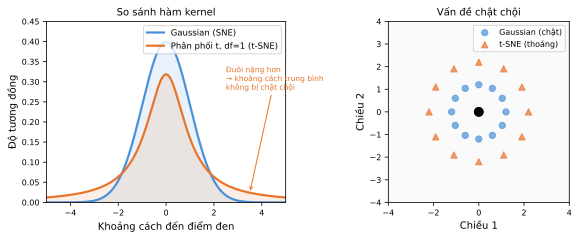

Học máy
Bài 6: Giảm chiều dữ liệu
Trường ĐH Công nghệ – Đại học Quốc gia Hà Nội
Nội dung
1.
Tổng quan
Học có giám sát vs. không giám sát
Học có giám sát
- Có nhãn đầu ra \(Y\) kèm đặc trưng \(X_1,\ldots,X_p\)
- Mục tiêu: dự đoán \(Y\) từ \(X\)
- Đánh giá rõ ràng qua sai số kiểm tra
- Hồi quy, phân lớp, ...
Học không giám sát
- Chỉ có đặc trưng \(X_1,\ldots,X_p\), không có nhãn
- Mục tiêu: khám phá cấu trúc ẩn trong dữ liệu
- Khó đánh giá chất lượng kết quả
- Phân cụm, giảm chiều, ...
Học không giám sát
Không có câu hỏi mục tiêu rõ ràng — mang tính khám phá:
- Tìm các mẫu, nhóm, hoặc cụm trong biến hoặc quan sát
- Chiếu dữ liệu từ không gian chiều cao xuống chiều thấp
- Trực quan hóa dữ liệu một cách có thông tin
- Phát hiện bất thường (anomaly detection)
Ưu điểm:
- Dữ liệu không nhãn dễ thu thập hơn nhiều
- Nhiều bài toán thú vị nhất lại là không giám sát — tập trung vào khám phá
Ví dụ: phân nhóm ung thư theo đặc trưng gen; phân tích hành vi mua sắm; gợi ý phim theo đánh giá người dùng.
Động lực giảm chiều
Dữ liệu chiều cao đặt ra nhiều thách thức:
- Khó trực quan hóa khi \(p > 3\)
- Nhiều chiều tương quan gây khó khăn cho các thuật toán
- Tính toán tốn kém do hàm khoảng cách phức tạp
Lời nguyền chiều dữ liệu (curse of dimensionality):
- Cần lượng dữ liệu tăng theo hàm mũ để mô tả mật độ
- Khoảng cách giữa các điểm trở nên vô nghĩa — tất cả gần bằng nhau
Thực tế: dữ liệu thường nằm trên một đa tạp chiều thấp nhúng trong không gian chiều cao — Mục tiêu: giảm chiều trong khi bảo toàn cấu trúc.
Các phương pháp giảm chiều
PCA
Tìm các hướng phương sai lớn nhất — bảo toàn cấu trúc toàn cục
1901
MDS
Chiếu khoảng cách chiều cao xuống chiều thấp — bảo toàn khoảng cách
1969
t-SNE
Bảo toàn cấu trúc cục bộ (láng giềng gần)
2008
PCA có thể dẫn đến bất nhất cục bộ — các điểm xa có thể trở thành láng giềng gần sau khi chiếu
2.
Phân tích thành phần chính
(Principal Component Analysis)
Ý tưởng trực quan
Dữ liệu dân số và chi tiêu quảng cáo của 100 thành phố:
- Dữ liệu gần tuyến tính theo một hướng, phương sai nhỏ theo hướng thứ hai
- PC1 (đường liền): hướng có phương sai lớn nhất
- PC2 (đường chấm): vuông góc với PC1
- Phần lớn biến động nằm dọc theo PC1
- PC định nghĩa hệ tọa độ mới

Dân số vs. quảng cáo — hướng PC1 và PC2
Định nghĩa chính thức
Thành phần chính thứ nhất là tổ hợp tuyến tính của các biến đã chuẩn hóa trung bình:
\[ Z_1 = \sum_{j=1}^{p} \phi_{j1}(X_j - \bar{X}_j) \]
- Ràng buộc chuẩn hóa: \(\phi_{11}^2 + \phi_{21}^2 + \cdots + \phi_{p1}^2 = 1\) (tránh co giãn tùy ý)
- Tìm \(\phi_{j1}\) sao cho phương sai \(Z_1\) lớn nhất
- \(\phi_{j1}\) gọi là hệ số tải (loading) của PC1
- \(z_{i1}\) gọi là điểm thành phần chính (PC score)
- PC thứ \(j\) là hướng vuông góc với mọi PC trước, có phương sai còn lại lớn nhất
PC1 và PC2 — Hai cách hiểu tương đương
Cực đại phương sai
- PC1: hướng mà hình chiếu dữ liệu có phương sai lớn nhất
- PC2: hướng vuông góc với PC1, phương sai còn lại lớn nhất
Cực tiểu khoảng cách
- PC1: đường thẳng gần nhất với tất cả các điểm (tổng bình phương khoảng cách từ điểm đến đường nhỏ nhất)
- PC hyperplane: siêu phẳng bảo toàn dữ liệu tốt nhất
Diễn giải 3: PCA tìm phép biến đổi tuyến tính sang hệ tọa độ mới trong đó dữ liệu không tương quan tuyến tính
Ví dụ: Tập dữ liệu USArrests
Tỷ lệ bắt giữ trên 100.000 dân tại các tiểu bang Mỹ (1973), 50 quan sát, 4 biến:
Murder: số vụ giết ngườiAssault: số vụ tấn côngUrbanPop: % dân đô thịRape: số vụ hiếp dâm
| Biến | PC1 | PC2 |
|---|---|---|
| Murder | 0.536 | −0.418 |
| Assault | 0.583 | −0.188 |
| UrbanPop | 0.278 | 0.873 |
| Rape | 0.543 | 0.167 |

Biplot PCA — USArrests
Diễn giải kết quả PCA — USArrests
- Các biến tội phạm (
Murder,Assault,Rape) tương quan cao — vectơ tải chỉ gần cùng hướng UrbanPopít tương quan hơn với tội phạm
PC1 phản ánh tỷ lệ tội phạm
- Cao: California, Nevada, Florida
- Thấp: West Virginia, Dakotas
PC2 phản ánh mức độ đô thị hóa
- Cao: California, New Jersey
- Thấp: Carolinas, Mississippi
Chọn số thành phần chính
Tỷ lệ phương sai được giải thích (PVE):
\[ \text{PVE}_m = \frac{\text{Var}(Z_m)}{\sum_{j=1}^{p}\text{Var}(X_j)} \]
- Nếu mục tiêu là trực quan hóa: chọn 2 hoặc 3 PC
- Nếu mục tiêu là tiền xử lý: chọn \(k\) PC sao cho PVE tích lũy đạt ngưỡng (ví dụ: 90%)
- Tìm điểm gãy khuỷu (elbow) trên biểu đồ PVE
- Có thể dùng kiểm định chéo trên sai số của tác vụ cuối

Biểu đồ PVE — tìm điểm khuỷu
3.
Chia tỷ lệ đa chiều
(Multidimensional Scaling)
Động lực — Hạn chế của PCA
PCA tìm cấu trúc toàn cục (tuyến tính) trong dữ liệu:
- Có thể dẫn đến bất nhất cục bộ
- Các điểm ở xa nhau có thể trở thành láng giềng gần sau khi chiếu
Ý tưởng: Thay vì bảo toàn phương sai (cấu trúc toàn cục), hãy bảo toàn khoảng cách (cấu trúc cục bộ).
Đây là cơ sở của MDS (Multidimensional Scaling) hay còn gọi là Sammon Mapping.
Chia tỷ lệ đa chiều (MDS)
Tìm biểu diễn \(z_1,\ldots,z_N \in \mathbb{R}^k\) sao cho khoảng cách được bảo toàn — tối thiểu hóa hàm stress:
Kruskal-Shepard:
\[ S_M = \sum_{i \neq i'} \left(d_{ii'} - \|z_i - z_{i'}\|\right)^2 \]
Sammon mapping — nhấn mạnh khoảng cách nhỏ:
\[ S_{Sm} = \sum_{i \neq i'} \frac{(d_{ii'} - \|z_i - z_{i'}\|)^2}{d_{ii'}} \]
Quan hệ giữa MDS và PCA
Tối thiểu hóa bằng gradient descent. Với classic scaling:
- Dùng tích vô hướng có tâm (centered inner product): \[ s_{ii'} = \langle x_i - \bar{x},\; x_{i'} - \bar{x} \rangle \]
- Hàm mục tiêu: \[ S_C(z_1,\ldots,z_N) = \sum_{i,i'}\left(s_{ii'} - \langle z_i - \bar{z},\; z_{i'} - \bar{z}\rangle\right)^2 \]
- Nghiệm theo eigenvectors của ma trận tương đồng
Nếu độ tương đồng là tích vô hướng có tâm, thì MDS classic chính xác là PCA.
MDS chỉ cần ma trận độ tương đồng / bất đồng — không cần tọa độ điểm thực tế.
MDS phi tham số (Non-metric MDS)
Phiên bản Shepard-Kruskal chỉ cần thứ hạng của khoảng cách:
\[ S_{NM}(z_1,\ldots,z_N) = \frac{\sum_{i \neq i'}\left(\|z_i - z_{i'}\| - \theta(d_{ii'})\right)^2}{\sum_{i \neq i'}\|z_i - z_{i'}\|^2} \]
- \(\theta\) là hàm tăng đơn điệu tùy ý
- Với \(\theta\) cố định: tối thiểu hóa theo \(z_i\) bằng gradient descent
- Với \(z_i\) cố định: tìm \(\theta\) đơn điệu tốt nhất bằng "isotonic regression"
Ứng dụng: phân tích kháng nguyên virus cúm (79 chiều → 2D), dự đoán kháng nguyên tương tự theo năm.
4.
t-SNE
Nhúng láng giềng ngẫu nhiên (SNE)
Ý tưởng: Thay vì bảo toàn khoảng cách, hãy bảo toàn xác suất láng giềng:
\(\mathbb{R}^p\)
chiều cao
chiều thấp
\(\mathbb{R}^k\)
- \(p_{j|i}\): xác suất điểm \(x_i\) "muốn" \(x_j\) là láng giềng trong không gian gốc
- \(q_{j|i}\): xác suất tương tự trong không gian chiều thấp
- Tìm \(z_i\) sao cho \(Q_i \approx P_i\) cho mọi điểm \(i\)
Độ tương đồng chiều cao
Dùng kernel Gaussian xung quanh mỗi điểm \(x_i\):
\[ p_{j|i} \propto \exp\!\left(-\frac{\|x_j - x_i\|^2}{2\sigma_i^2}\right) \]
\[ P_i \propto \mathcal{N}(x_i,\, \sigma_i^2) \]
- Chọn \(\sigma_i^2\) để đạt perplexity cố định: \(\text{Perp}(P_i) = 2^{H(P_i)}\)
- Perplexity điều khiển số láng giềng hiệu dụng của mỗi điểm
- Giá trị perplexity thường dùng: 5 – 50
Độ tương đồng chiều thấp & Hàm mục tiêu
SNE gốc dùng Gaussian trong không gian biểu diễn:
\[ q_{j|i} \propto \exp\!\left(-\|z_j - z_i\|^2\right) \]
Hàm mục tiêu — tổng phân kỳ KL:
\[ C = \sum_i KL(P_i \| Q_i) = \sum_i \sum_j p_{j|i} \log \frac{p_{j|i}}{q_{j|i}} \]
- Tối thiểu hóa bằng gradient descent
- Gradient hiểu như lực hút/đẩy: cặp gần trong \(P\) nhưng xa trong \(Q\) bị kéo lại gần
Phân kỳ KL
Đo "khoảng cách" giữa hai phân phối:
\[ KL(P \| Q) = \sum_j p_j \log \frac{p_j}{q_j} = H(P,Q) - H(P) \]
Tính chất:
- \(KL(P \| Q) \geq 0\)
- \(KL(P \| Q) = 0\) khi và chỉ khi \(P = Q\)
- Bất đối xứng: \(KL(P\|Q) \neq KL(Q\|P)\)
Ý nghĩa trong SNE:
- Phạt nặng khi \(q_{j|i}\) nhỏ mà \(p_{j|i}\) lớn
- Hai điểm gần nhau trong không gian gốc phải gần nhau trong biểu diễn mới
Vấn đề chật chội (Crowding Problem)
Vấn đề: Không gian chiều thấp có thể tích nhỏ hơn nhiều:
- Thể tích cầu bán kính \(r\) trong \(d\) chiều: \(V \propto r^d\)
- Khi \(d\) tăng, thể tích tăng mạnh
- Khi chiếu xuống \(k \ll d\), không đủ chỗ cho các điểm ở khoảng cách hợp lý
- Các điểm trung bình và xa bị dồn cục vào trung tâm
Giải pháp: Dùng phân phối đuôi nặng hơn!

Gaussian (SNE) vs. phân phối t (t-SNE)
Từ SNE đến t-SNE
Hai cải tiến chính:
- Đối xứng hóa xác suất (symmetric SNE): \[ p_{ij} = \frac{p_{j|i} + p_{i|j}}{2n}, \quad p_{ii} = 0 \] \(\Rightarrow\) Một hàm KL duy nhất: \(C = KL(P \| Q) = \sum_{i,j} p_{ij} \log \dfrac{p_{ij}}{q_{ij}}\)
- Phân phối t (bậc 1) cho không gian chiều thấp: \[ q_{ij} = \frac{(1 + \|z_i - z_j\|^2)^{-1}}{\sum_{k \neq l}(1 + \|z_k - z_l\|^2)^{-1}} \] Đuôi nặng hơn Gaussian — giảm vấn đề chật chội
Thuật toán t-SNE — Tóm tắt
- Tính \(p_{j|i}\) trong không gian chiều cao (Gaussian, \(\sigma_i\) theo perplexity)
- Đối xứng hóa: \(p_{ij} = (p_{j|i} + p_{i|j}) / (2n)\)
- Khởi tạo ngẫu nhiên \(z_1, \ldots, z_n \in \mathbb{R}^k\)
- Tính \(q_{ij}\) trong không gian chiều thấp (phân phối t bậc 1)
- Tối thiểu hóa \(KL(P\|Q)\) bằng gradient descent — lặp đến hội tụ
Gradient hiểu như lực hút/đẩy: cặp điểm gần trong \(P\) nhưng xa trong \(Q\) bị kéo lại gần nhau; ngược lại bị đẩy ra xa.
Ưu điểm và hạn chế của t-SNE
Ưu điểm
- Tiêu chuẩn hiện tại cho trực quan hóa dữ liệu chiều cao
- Giúp hiểu các thuật toán "hộp đen" (DNN)
- Giảm vấn đề chật chội nhờ đuôi nặng
- Bảo toàn cấu trúc cụm cục bộ tốt
Hạn chế
- Cẩn thận: kích thước cụm, khoảng cách giữa cụm, mật độ cụm không có ý nghĩa tuyệt đối
- Nhạy cảm với siêu tham số (perplexity)
- Không tốt cho \(k > 3\)
- Nhiễu ngẫu nhiên không phải lúc nào cũng trông ngẫu nhiên
- Không có cách dễ để nhúng điểm mới
Thay thế phổ biến: UMAP — nhanh hơn, bảo toàn cấu trúc toàn cục tốt hơn
Ảnh hưởng của Perplexity
Perplexity điều khiển số láng giềng hiệu dụng — ảnh hưởng lớn đến kết quả:
nhỏ
perp = 2
ràng
perp = 5–50
gộp lại
perp = 100
⚠️ Luôn thử nhiều giá trị perplexity trước khi diễn giải kết quả t-SNE.
•
Tổng kết
So sánh các phương pháp
| Phương pháp | Tuyến tính? | Bảo toàn | Tham số | Phù hợp khi |
|---|---|---|---|---|
| PCA | ✓ | Phương sai toàn cục | Số PC \(k\) | Cấu trúc tuyến tính; tiền xử lý; diễn giải được |
| MDS | ✗ | Khoảng cách pairwise | Số chiều \(k\) | Chỉ có ma trận khoảng cách (không có tọa độ) |
| t-SNE | ✗ | Cấu trúc láng giềng | Perplexity | Trực quan hóa; khám phá cụm; \(k = 2, 3\) |
Dữ liệu chiều cao thách thức — giảm chiều giúp trực quan hóa và cải thiện thuật toán xuôi dòng.
Tài liệu tham khảo
- James, G., Witten, D., Hastie, T., Tibshirani, R. An Introduction to Statistical Learning (ISLR), 2nd ed., Springer, 2021. Chương 12.
- Hastie, T., Tibshirani, R., Friedman, J. The Elements of Statistical Learning (ESL), 2nd ed., Springer, 2009. Chương 14.
- van der Maaten, L. & Hinton, G. Visualizing Data using t-SNE, JMLR, 2008.
- Muandet, K. & Vreeken, J., Lecture slides, Saarland University.